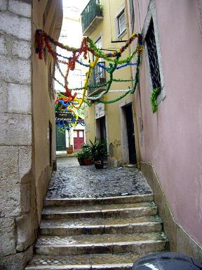
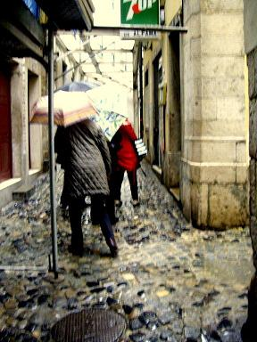
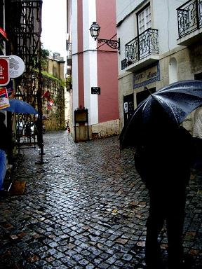
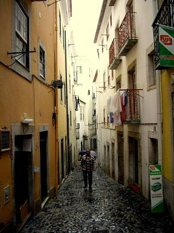
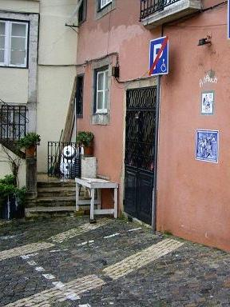
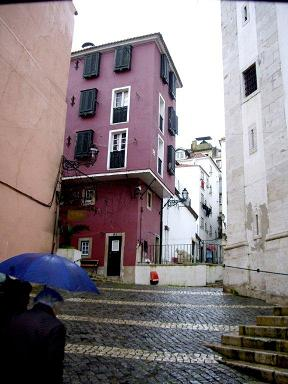
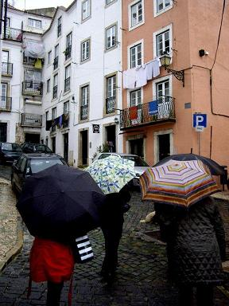
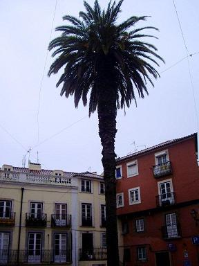
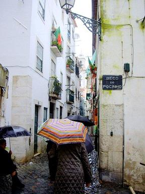
Lisbonne: quartier de l'Alfama
Ce cinquième et avant dernier jour est consacré à la découverte de Lisbonne, à 140 km plus au sud. Nous nous sommes levés très tôt.
Le beau temps n'est malheureusement pas au rendez-vous: il pleut à torrent pendant le trajet et la pluie accompagnera la plus grande partie de nos pérégrinations dans les rues de la ville.
Le guide local, Ana, nous conduit d'abord à travers les pittoresques ruelles (becos), placettes (largos) et escaliers (escadinhas) du plus vieux quartier de Lisbonne, l'
Alfama
, une citadelle dont le nom signifie 'le Hammam", allusion aux sources d'eau chaude qu'on y trouve. La citadelle fut construite par les Maures au XIème siècle. Nous partons du Quai de Santarem. La pluie tombe en comptant bien ses gouttes et, à l'abri de nos parapluies, nous manquons l'essentiel des explications prodiguées par le guide, si ce n'est qu'Alfama ne disposa longtemps que d'un unique point d'eau; que c'est surtout ici, au début du XIXème siècle, qu'est né le
fado
(en revenant vers le bus, nous passons devant la "maison du Fado"); et que le quartier a beaucoup souffert du tremblement de terre de 1755.
Panthéon National de Santa Engrácia
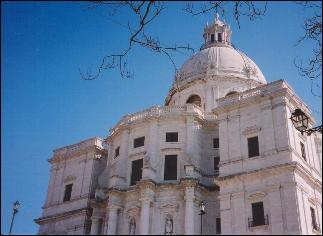
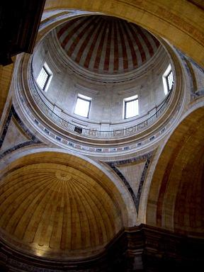
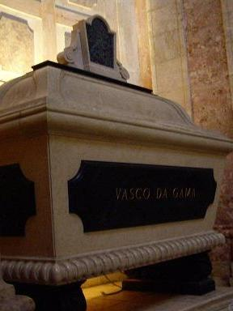
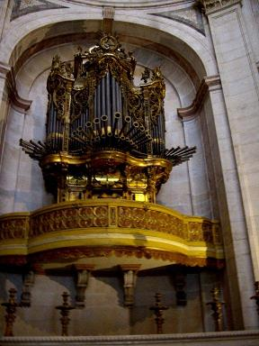
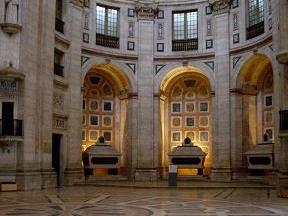
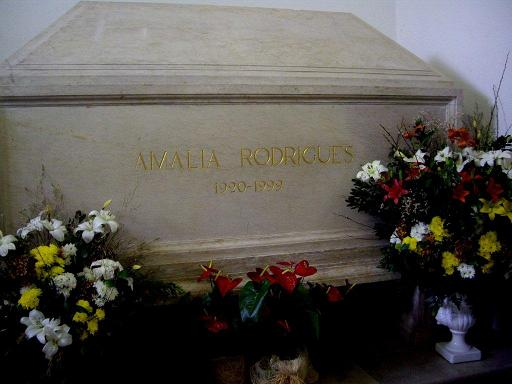
Lisbonne: Panthéon de Santa Engrácia
Le minibus nous emporte maintenant vers un site excentré à l'ouest de la ville, le Largo de Santa Clara que l'on atteint par une magnifique autoroute urbaine. Les autoroutes portugaises sont d'ailleurs toutes excellentes.
Ici se dresse l'
église de Santa Engrácia
qui abrite le
Panthéon national portugais
. Cette visite a été ajoutée à notre programme pour nous dédommager de notre déconvenue à Alcobaça.
Cette église fut construite à la place d'une autre qui avait été profanée en 1630. L'auteur présumé de ce crime, injustement exécuté, aurait proféré une malédiction qui fit qu'on mit des siècles à construire la nouvelle église. Ce pastiche de Saint-Pierre de Rome ne fut achevé qu'en 1966.
À l'instar de son homonyme parisien, ce monument abrite les tombeaux de plusieurs présidents portugais, de l'écrivain Almeida Garret (19ème siècle) et une seule femme, Amalia Rodrigues, la diva du Fado.
Le plan de l'édifice est celui d'une croix grecque et l'intérieur est revêtu de marbres polis multicolores. À proximité se tient, deux fois par semaine, le marché aux puces "Feira da Ladra".
Le quartier de Belém
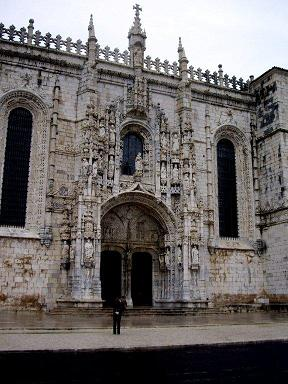
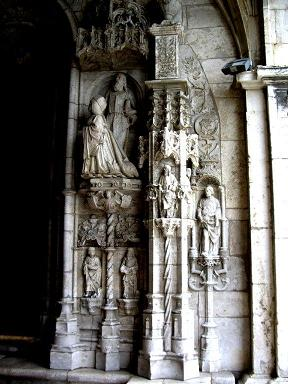
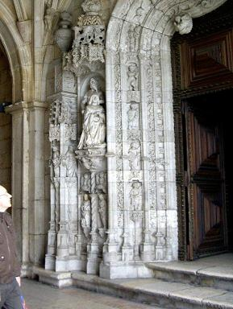
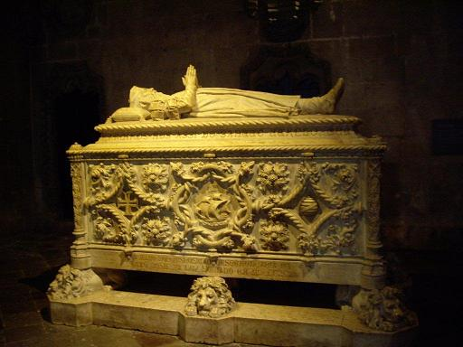
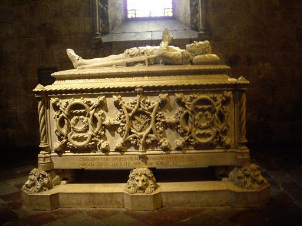
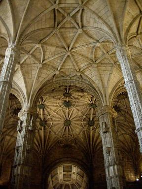
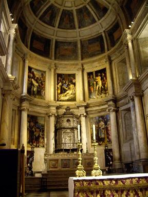
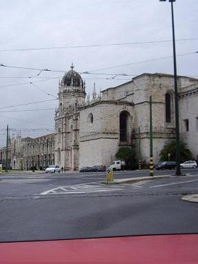
Quartier de Belém: le Monastère des Hiéronymites
Le quartier de Belém (=Bethlehem) se trouve à l'extrême-ouest du centre ville. Il présente une grande concentration de monuments modernes et anciens. C'est aussi le quartier officiel où se trouve le palais présidentiel.
L'imposant
monastère des Hiéronymites
(Mosteiro dos Jerônimos). La construction de ce fleuron de l'architecture manuéline commença en 1501 et dura plus d'un siècle de sorte qu'on y trouve des éléments gothiques, Renaissance et même néoclassiques.
Bâti sur l'ordre de
Manuel Ier
, il devait être le reflet de la puissance politique et expansionniste du Portugal de cette époque. Il se situe à proximité de la berge où la flotte de Vasco de Gama accosta à son retour des Indes. Il fut financé par les richesses provenant du commerce des épices et par l'or du Brésil et du Mozambique. Il fut miraculeusement épargné par le séisme de 1755, même si certaines statues furent détachées des colonnes où elles étaient adossées. Le monument est classé par l'Unesco au patrimoine mondial de l'humanité.
Deux grandes figures historiques portugaises sont enterrées ici: Vasco de Gama et le poète Luis de Camões (1524 -1580), à l'entrée, sous la tribune du chœur. On y trouve aussi quatre sépultures royales et celle de Fernando Pessoa (mort en 1935 et transféré ici en 1985).
Les magnifiques sculptures du
portail Sud
sont l'œuvre de João de Castilho. Elles sont surmontées d'une croix des chevaliers de l'ordre du Christ et d'une statue d'Henri le Navigateur, grand-oncle de Manuel Ier et principal promoteur de l'exploration maritime portugaise.
En pénétrant sous le porche, on découvre le
portail Ouest
, tout aussi somptueux. Les statues sont d'un artiste français, Nicolas Chanterène. L'ensemble témoigne d'un équilibre parfaitement dominé, entre la simplicité et la recherche du détail.
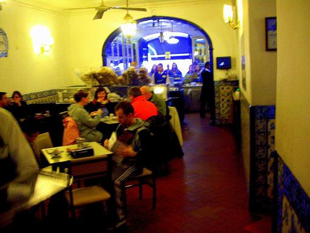
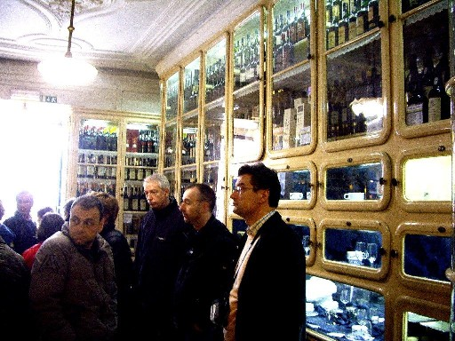
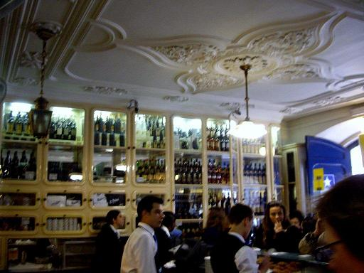
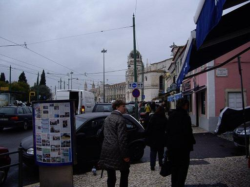
Belém: la pâtisserie Pastéis de Belém
La pâtisserie Pastéis de Belém est la plus réputée de Lisbonne. Elle est située à côté du monastère. Le salon de thé date du XIXème siècle. La recette des célèbres petits flans, qui reste un secret bien gardé, aurait été mise au point par les moines voisins. La pâtisserie débite 7.000 exemplaires de ces douceurs chaque jour. Nous n'avons pas eu le temps d'y goûter!
Les Quais de Belém
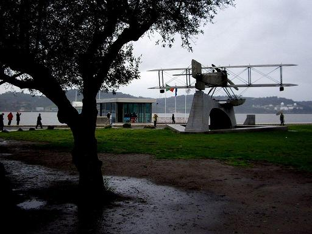
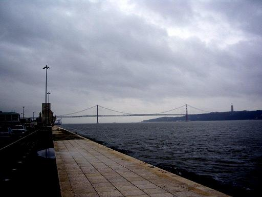
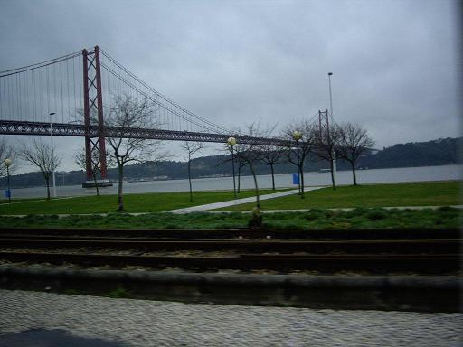
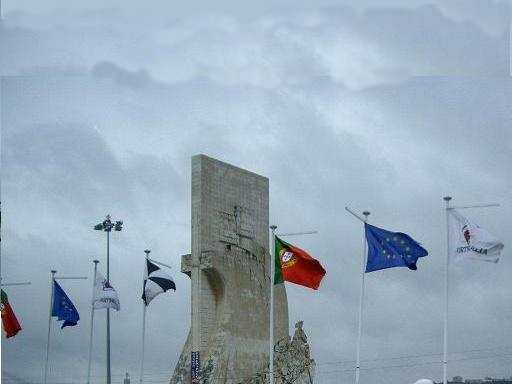
Les Quais de Belém
Les quais de Belém offrent une vue unique (par beau temps!) sur le Tage qui se confond ici avec l'océan.
Le
pont du 25-Avril
fut le premier pont suspendu construit à Lisbonne pour franchir le Tage, en 1960, sous Salazar. La tâche fut confiée à l'American Bridge Company, aidée de onze sociétés locales. Les travaux durèrent moins de quatre ans et le pont, inauguré le 6 août 1966, fut d'abord baptisé "pont Salazar", puis, après la Révolution des œillets, "Pont du 25-Avril", jour de la révolution.
La longueur totale est de 2277 mètres. La travée centrale est longue de 1012 mètres et le tablier culmine à 70 mètres au-dessus de l'eau. Cet ouvrage remarquable est toutefois éclipsé par un second pont, à l'est de Lisbonne, le pont Vasco de Gama, long de 17 kilomètres!
Le
Monument des découvertes
(Padrão dos Descobrimentos) date de 1960. On le doit au sculpteur Leopoldo D'Almeida. Henri le Navigateur sert au monument de figure de proue. Sur le sol est représentée une carte du monde.
Un autre monument évoque une des premières traversées de l'Atlantique par les aviateurs portugais.
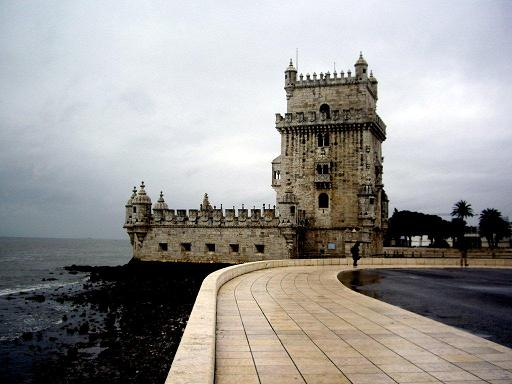
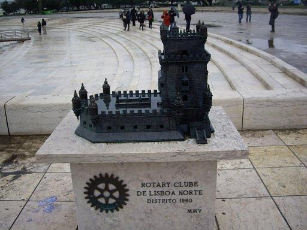
Lisbonne: la Tour de Belém
La
Tour de Belém
est le joyau architectural le plus photographié de Lisbonne. Elle fut édifiée en 1519 par les frères François et Diègue d'Arruda pour protéger la ville contre les attaques des pirates anglais et hollandais et se trouvait à l'origine sur une île en plein milieu du Tage. Si elle est aujourd'hui si près du rivage, c'est que le tremblement de terre de 1755 a dévié le cours d'eau.
C'est un chef d'œuvre de l'art manuélin mêlé d'éléments gothiques et Renaissance, avec des tours de guet mauresque et une loggia vénitienne. Et, malgré tout, l'ensemble est d'une rare harmonie.
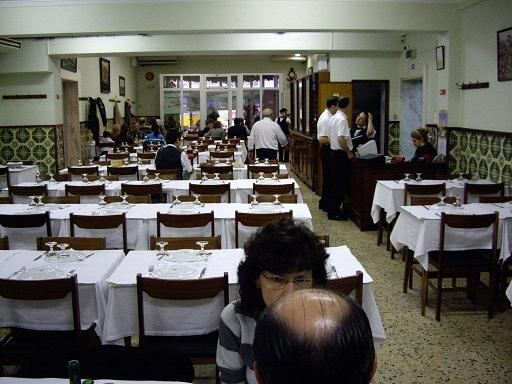
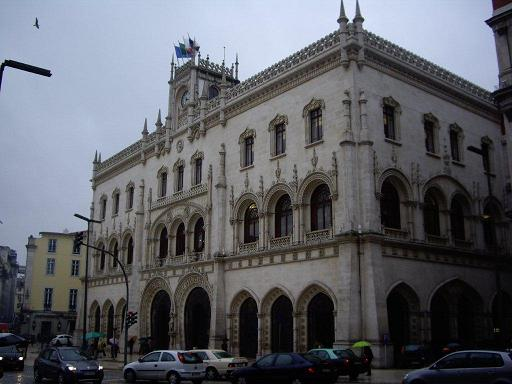
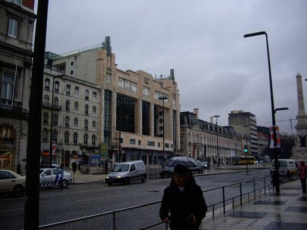
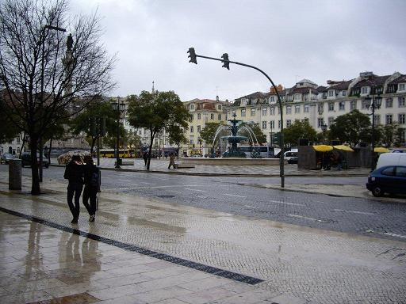
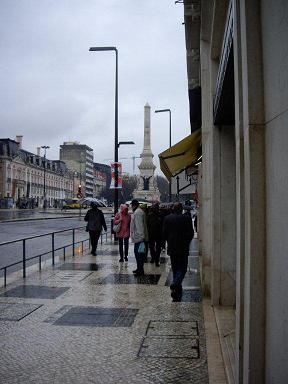
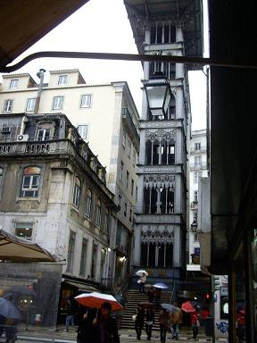
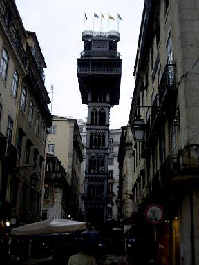
Lisbonne: divers aspects du quartier de la Baixa sous la pluie!
Le centre de Lisbonne est bordé par deux places: la place Pierre IV ou Rossio et la Place du Commerce qui donne sur le fleuve (superbe, paraît-il, mais nous ne l'avons pas vue, en raison de la pluie battante).
Après le séisme de 1755 qui toucha plus particulièrement
la Baixa
(=le Bas), le
marquis de Pombal
ordonna la reconstruction de bâtiments relativement simples pour y loger les ouvriers destinés à la reconstruction. Le plan d'aménagement divisa le quartier en deux parties de part et d'autre de la
rua Augusta
.
Dans la rue de l'Or se trouve l'
élévateur de Sainte Juste
(ou du Carme), haut de 45 m et datant de 1902. Il permettait d'accéder par une passerelle désormais fermée, au quartier du Chiado, le plus élevé de la ville. Il a été conçu et réalisé par un élève de Gustave Eiffel, Raoul de Mesnier du Ponsard. Il était actionné, à l'origine, par une machine à vapeur, mais il fut électrifié dès 1907. En haut de cette tour néogothique se trouve un café depuis lequel on jouit, par beau temps, d'une belle vue sur le Rossio et le château Saint-Georges qui surplombe l'Alfama. Lisbonne possède en outre 2 funiculaires plus classiques.
C'est sur cette note humide que s'achève ce trop court séjour de découverte.
Pendant le trajet de retour, Dora, nous passe, sur un écran fixé au plafond du minibus, un DVD avec des vidéos montrant des concerts de la nouvelle diva du Fado: Mariza. Ainsi se trouve enfin justifié, in extremis, le titre du circuit:
"Sur un air de Fado".